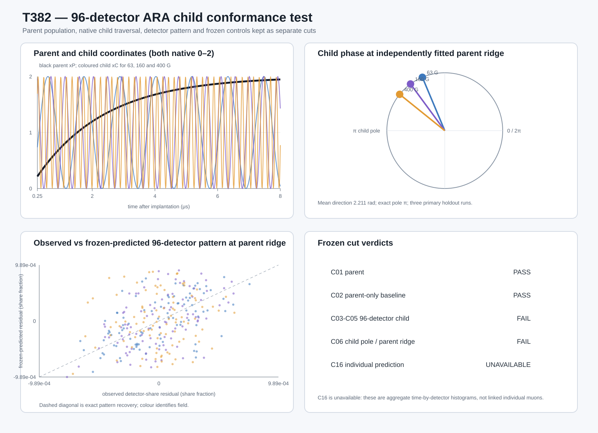

T382 — ARA-native 96-detector traversal-child test
PARENT_RECOVERED_96_DETECTOR_CHILD_NOT_QUALIFIED
Answer first
The population parent passed, but the calibration-frozen 96-detector relation did not qualify as a stable traversal child under the frozen controls. C06 cannot be interpreted as child-mediated handover evidence.
Aggregate daughter histograms reconstruct a population parent and candidate spin child. Neither neutrino is observed, and individual advance prediction is unavailable.
Frozen identities
Parent: detector-summed muon population, xP=2(1−exp(−t/τ)). Child: the calibration-frozen 96-detector spin relation, xC=1−cos(θ). Both retain their own native 0–2 coordinate. Projection xC/2 is bookkeeping only.
Key numbers
- Parent τ: 2.192800 μs; ridge: 1.519933 μs.
- Detector-share cadence coefficient: 0.013820000 MHz/G; post-freeze reference difference: 1.963%.
- Mean primary holdout child gain: -0.974127; reverse gain: -1.413730.
- Correct detector map gain: -0.974127; wrong-shift 95th percentile: -0.882234.
- Detector-bootstrap 95% interval for mean gain: [-1.071427, -0.872500].
Visual audit

Gate table
| cut | verdict |
|---|---|
| data_quality_pass | PASS |
| c01_parent_pass | PASS |
| c02_parent_only_pass | PASS |
| c03_c05_child_pass | FAIL |
| c06_alignment_pass | FAIL |
| c16_individual_prediction | UNAVAILABLE |
Per-run audit
| run | split | G | child gain | reverse gain | free γ MHz/G | phase@parent ridge rad |
|---|---|---|---|---|---|---|
| EMU00066572 | calibration | 20 | 0.297257 | 0.034623 | nan | nan |
| EMU00066574 | calibration | 20 | 0.296310 | 0.034954 | nan | nan |
| EMU00066576 | calibration | 20 | 0.296116 | 0.033948 | nan | nan |
| EMU00066573 | calibration | 25 | -0.456443 | -1.456836 | nan | nan |
| EMU00066575 | calibration | 25 | -0.443892 | -1.441058 | nan | nan |
| EMU00066577 | calibration | 25 | -0.443433 | -1.450032 | nan | nan |
| EMU00066581 | diagnostic | 1000 | -1.575443 | -1.574932 | 0.015600 | nan |
| EMU00066582 | diagnostic | 2000 | -1.606619 | -1.604302 | 0.015600 | nan |
| EMU00066583 | diagnostic | 4000 | -1.617833 | -1.617068 | 0.015600 | nan |
| EMU00066578 | holdout | 63 | -0.554862 | -1.448238 | 0.013650 | 1.9677 |
| EMU00066579 | holdout | 160 | -0.897033 | -1.382455 | 0.013550 | 2.2036 |
| EMU00066580 | holdout | 400 | -1.470488 | -1.410496 | 0.013550 | 2.4631 |
| EMU00066584 | validation | 20 | 0.297267 | 0.034796 | 0.013900 | nan |
| EMU00066571 | validation | 25 | -0.461568 | -1.459627 | 0.013850 | nan |
Secondary diagnostics
Native/2-bin/4-bin sensitivity, detector bootstrap, detector-map shifts, and detector-summed release modulation are machine-readable beside this report. They audit stability; they do not replace a failed primary gate.
Boundary
The source is Class P aggregate μSR. It does not record a named muon's repeated pre-decay state linked to its own decay daughters, and it does not detect either neutrino. C16 therefore remains unavailable.
Reproduce
Run t382_ral_silver_detector_share.py after the frozen T382 parent execution. Source hashes and all quality checks are recorded in the validation JSON.